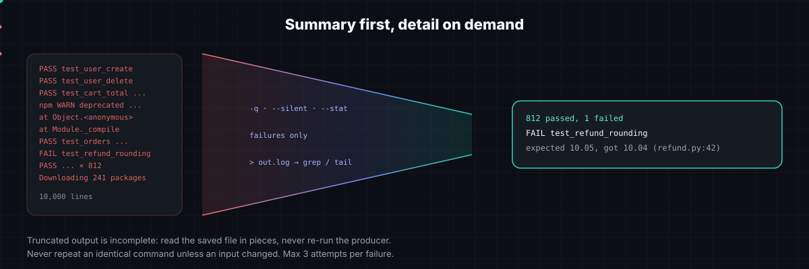
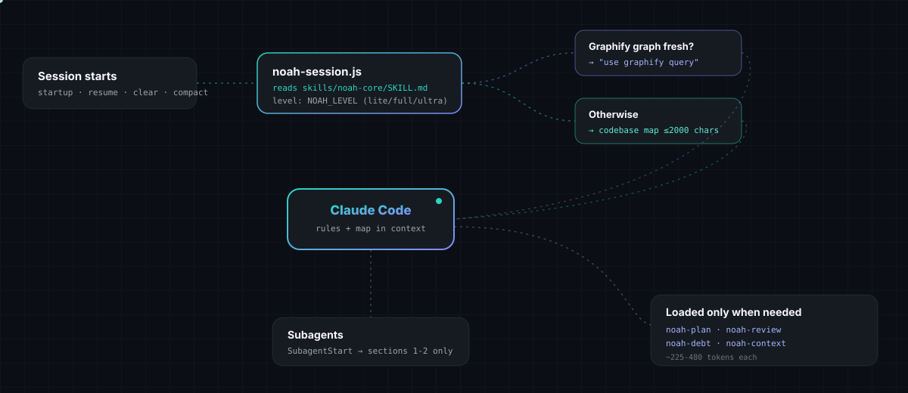
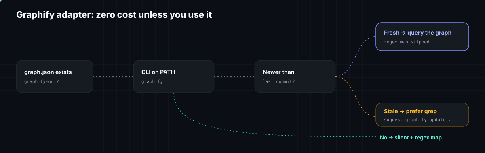
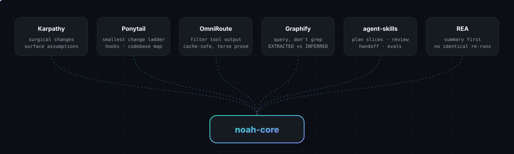

A
/plugin marketplace add Smith-Develop/Noah-core /plugin install noah-core@noah-core
B
git clone https://github.com/Smith-Develop/Noah-core.git cp -r Noah-core/skills/noah-* ~/.claude/skills/
/noah-core ultra | ||
/noah-plan | ||
/noah-review | ||
/noah-debt | ||
/noah-context |
lite
full
ultra
{
"env": {
"NOAH_LEVEL": "full",
"NOAH_MAP_CHARS": "2000"
}
}

